Breakthroughs in Heat Transfer#
“Heat, like gravity, penetrates every substance of the universe, its rays occupy all parts of space.” – Joseph Fourier, Théorie analytique de la chaleur, 1822
Heat moves by conduction, convection and radiation, and each became
computable at a different time. Conduction had its law and its equation by
1822. Radiation waited for the blackbody laws of the late nineteenth
century, and convection, which mixes heat transfer with fluid mechanics,
for the dimensionless correlations of the twentieth. Phase change and heat
exchangers turned these pieces into the design rules of power stations,
engines and refrigerators. The entries trace the ideas behind
engineeringkit.heat_transfer. Each links to the implementing function
and to a gallery example devoted to it.
1701 – Newton’s Law of Cooling#
Isaac Newton wanted a temperature scale beyond the range of his linseed-oil thermometer. He heated a block of iron red hot, set it in a steady wind, and assumed that the heat it lost was proportional to its excess over the air temperature. Equal intervals of time then multiply the excess by equal factors, so the clock becomes a thermometer. The paper appeared anonymously in the Philosophical Transactions. Today the law defines the convection coefficient, \(\dot Q = hA(T_s - T_\infty)\), which hides all the fluid mechanics in \(h\).
Implementation: engineeringkit.heat_transfer.convection_heat_rate()
and engineeringkit.heat_transfer.lumped_temperature(). The example
recovers the time constant from readings at equal intervals and checks the
energy balance of a cooling block.
References: [I. Newton], “Scala graduum caloris,” Phil. Trans. R. Soc. 22 (1701) 824-829.
1804 – Biot’s Heated Bar and the Biot Number#
Jean-Baptiste Biot heated one end of iron bars and read thermometers along them. The steady profile was set by a contest between conduction along the bar and loss from its surface. Biot could not write a consistent differential equation for it, because he treated conduction as an action between distant slices; Fourier did in 1807. The ratio of surface conductance to internal conductance, \(Bi = hL/k\), now carries Biot’s name and decides whether a body can be treated as one temperature.
Implementation: engineeringkit.heat_transfer.biot_number(). The
example compares the lumped model with the exact plane-wall solution at
Biot numbers of 0.01, 0.1 and 1.
References: J.-B. Biot, “Mémoire sur la propagation de la chaleur,” Bibliothèque britannique 27 (1804) 310-329.
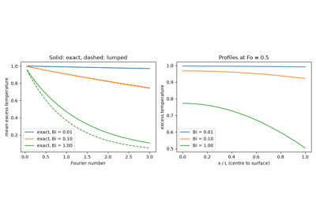
Biot’s heated bar and the Biot number (1804)
1822 – Fourier’s Théorie analytique de la chaleur#
Joseph Fourier made the heat flux proportional to the temperature gradient, \(q = -k\,\mathrm{d}T/\mathrm{d}x\), derived the heat equation from an energy balance, and solved it with trigonometric series. The memoir of 1807 met objections from Lagrange and Laplace, and the full theory appeared as a book in 1822. For steady flow through a slab the law is \(\dot Q = kA\Delta T/L\), so layers behave like resistors in series. Curved walls give logarithmic resistances and, with them, a critical radius below which insulation increases heat loss.
Implementation: engineeringkit.heat_transfer.fourier_heat_rate(),
engineeringkit.heat_transfer.plane_wall_resistance(),
engineeringkit.heat_transfer.composite_wall(),
engineeringkit.heat_transfer.cylinder_resistance() and
engineeringkit.heat_transfer.critical_insulation_radius_cylinder().
The example solves a furnace wall as a resistor chain and finds the critical
radius of wire insulation numerically.
References: J. Fourier, Théorie analytique de la chaleur (Paris: Firmin Didot, 1822).
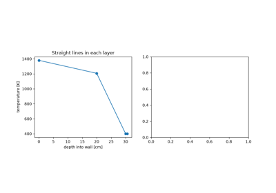
Fourier’s Théorie analytique de la chaleur (1822)
1859 – Kirchhoff’s Law of Thermal Radiation#
Gustav Kirchhoff, working with Robert Bunsen on spectra, proved from the second law that at each wavelength a body’s emissivity equals its absorptivity. If it did not, a body in an isothermal enclosure could heat itself above its surroundings. The perfect absorber, the blackbody, became the universal emitter whose spectrum depends on temperature alone, and finding that spectrum occupied physics for the next forty years.
Implementation: engineeringkit.heat_transfer.radiation_heat_rate()
and engineeringkit.heat_transfer.radiation_coefficient(). The example
lets plates with \(\alpha = \varepsilon\) and \(\alpha \ne \varepsilon\)
come to equilibrium in an enclosure, and linearises radiation as a
heat-transfer coefficient.
References: G. Kirchhoff, “Über das Verhältniss zwischen dem Emissionsvermögen und dem Absorptionsvermögen der Körper für Wärme und Licht,” Ann. Phys. Chem. 109 (1860) 275-301.
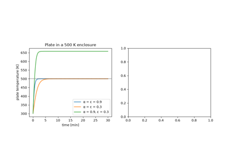
Kirchhoff’s law of thermal radiation (1859)
1862 – Kelvin’s Age of the Earth#
William Thomson treated the Earth as a semi-infinite solid that began molten and has cooled from its surface ever since. The error-function solution makes the surface gradient fall as \(1/\sqrt t\), so the gradient measured in mines, about 1 °F per 50 ft, dates the Earth: about 98 million years. Geologists and Darwin needed far longer. The calculation was right; the model was not, because convection in the mantle (argued by John Perry in 1895) and radioactive heat keep the interior hot.
Implementation:
engineeringkit.heat_transfer.semi_infinite_temperature(). The example
redoes Kelvin’s arithmetic in SI units and checks the gradient against the
profile.
References: W. Thomson, “On the secular cooling of the earth,” Trans. R. Soc. Edinburgh 23 (1864) 157-169 (read 28 April 1862).
1879-1884 – Stefan and Boltzmann: Emission Grows as T⁴#
Josef Stefan noticed that John Tyndall’s platinum wire radiated 11.7 times as much at 1200 °C as at 525 °C, close to the ratio of the absolute temperatures to the fourth power. Five years later his former student Ludwig Boltzmann derived \(E_b = \sigma T^4\) from thermodynamics and Maxwell’s radiation pressure. The value of \(\sigma\) was explained only in 1900, by integrating Planck’s spectrum.
Implementation:
engineeringkit.heat_transfer.stefan_boltzmann_emissive_power() and
engineeringkit.heat_transfer.planck_spectral_emissive_power(). The
example reproduces Stefan’s ratio and integrates Planck’s law to recover
\(\sigma T^4\).
References: J. Stefan, “Über die Beziehung zwischen der Wärmestrahlung und der Temperatur,” Sitzungsber. Akad. Wiss. Wien 79 (1879) 391-428; L. Boltzmann, “Ableitung des Stefan’schen Gesetzes, betreffend die Abhängigkeit der Wärmestrahlung von der Temperatur aus der electromagnetischen Lichttheorie,” Ann. Phys. Chem. 22 (1884) 291-294.
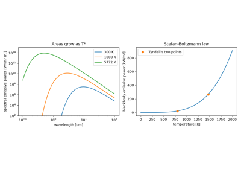
Stefan and Boltzmann: emission grows as T⁴ (1879-1884)
1891 – Stefan’s Problem: A Moving Freezing Front#
Josef Stefan asked how fast sea ice thickens in the polar winter. Latent heat is released at the ice-water interface, whose position is part of the unknown: the first moving-boundary problem. Stefan found that the thickness grows as the square root of time. Franz Neumann had already given the exact similarity solution in his Königsberg lectures, \(s = 2\lambda\sqrt{\alpha t}\) with \(\lambda e^{\lambda^2}\operatorname{erf}\lambda = Ste/\sqrt\pi\). The same mathematics governs casting, welding and frozen ground.
Implementation: engineeringkit.heat_transfer.neumann_stefan_front()
and engineeringkit.heat_transfer.stefan_number(). The example grows a
winter of sea ice, checks the energy balance at the front and compares
Stefan’s quasi-steady estimate.
References: J. Stefan, “Über die Theorie der Eisbildung, insbesondere über die Eisbildung im Polarmeere,” Ann. Phys. Chem. 42 (1891) 269-286.
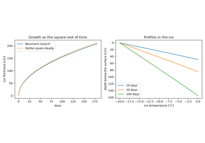
Stefan’s problem: a moving freezing front (1891)
1893 – Wien’s Displacement Law#
Wilhelm Wien compressed blackbody radiation in an imaginary cavity with a moving mirror. Doppler shifts and the second law forced the spectrum to keep its shape: divided by \(T^5\) it depends only on \(\lambda T\). Its peak therefore sits at \(\lambda_{max}T = b = 2898\) um K, in the visible for the Sun and near 10 um for a person, which is why thermal cameras work in that band.
Implementation:
engineeringkit.heat_transfer.blackbody_peak_wavelength(). The example
finds the peak of Planck’s spectrum numerically and collapses spectra at
four temperatures onto one curve.
References: W. Wien, “Eine neue Beziehung der Strahlung schwarzer Körper zum zweiten Hauptsatz der Wärmetheorie,” Sitzungsber. Preuss. Akad. Wiss. Berlin (1893) 55-62.
1916 – Nusselt’s Film Condensation#
Wilhelm Nusselt analysed steam condensing on a cold vertical wall. The condensate forms a laminar film that drains under gravity; balancing weight against viscous shear and latent heat against conduction across the film gives a thickness growing as \(x^{1/4}\) and an average coefficient \(0.943[g\rho_l(\rho_l-\rho_v)k_l^3h_{fg}/(\mu_lL\Delta T)]^{1/4}\). It was the first convection coefficient derived rather than measured, and is still the basis of condenser design.
Implementation:
engineeringkit.heat_transfer.nusselt_film_condensation(). The example
integrates the local coefficient along the film and checks the mass and
energy balance of the condensate.
References: W. Nusselt, “Die Oberflächenkondensation des Wasserdampfes,” Z. VDI 60 (1916) 541-546, 569-575.
1922 – Harper and Brown’s Fin Efficiency#
Air-cooled aero engines shed their heat through cylinder fins. D. R. Harper and W. B. Brown of the Bureau of Standards solved the fin equation \(\theta'' = m^2\theta\) for NACA, defined the fin efficiency, the heat carried over that of an isothermal fin, and showed that a convecting tip is accounted for by lengthening the fin by half its thickness. Their efficiency curves are still how fins are sized.
Implementation: engineeringkit.heat_transfer.fin_parameter(),
engineeringkit.heat_transfer.fin_efficiency_adiabatic() and
engineeringkit.heat_transfer.fin_heat_rate_adiabatic(). The example
solves the fin equation with a convecting tip numerically and checks the
corrected length.
References: D. R. Harper and W. B. Brown, “Mathematical equations for heat conduction in the fins of air-cooled engines,” NACA Report 158 (1922).
1928 – Nusselt’s Unit-Sphere View Factor#
The fraction of radiation leaving one diffuse surface that reaches another is a fourfold integral. Wilhelm Nusselt reduced it to a drawing: project the second surface onto a unit hemisphere, then down onto the base circle; the covered fraction is the view factor. Closed forms for common geometries followed, and Nusselt’s construction lives on as the cosine-weighted sampling of Monte Carlo ray tracers.
Implementation:
engineeringkit.heat_transfer.view_factor_parallel_plates() and
engineeringkit.heat_transfer.view_factor_coaxial_disks(). The example
turns the unit sphere into a Monte Carlo ray tracer and checks the closed
forms and reciprocity.
References: W. Nusselt, “Graphische Bestimmung des Winkelverhältnisses bei der Wärmestrahlung,” Z. VDI 72 (1928) 673.
1930 – Dittus and Boelter: Turbulent Pipe Convection#
F. W. Dittus and L. M. K. Boelter at Berkeley correlated tests on automobile radiator tubes with a power law in the Reynolds and Prandtl numbers. McAdams’s rounded version, \(Nu = 0.023Re^{0.8}Pr^n\) with \(n = 0.4\) for heating and 0.3 for cooling, became the most quoted equation in convection, though the original paper gave 0.0243 and 0.0265. Colburn’s analogy (1933) between friction and heat transfer reproduces the 0.023.
Implementation:
engineeringkit.heat_transfer.dittus_boelter_nusselt(). The example
sizes the coefficient for water in a tube, derives it from the Colburn
analogy and compares it with Gnielinski’s correlation.
References: F. W. Dittus and L. M. K. Boelter, “Heat transfer in automobile radiators of the tubular type,” Univ. Calif. Publ. Eng. 2 (1930) 443-461; R. H. S. Winterton, “Where did the Dittus and Boelter equation come from?”, Int. J. Heat Mass Transfer 41 (1998) 809-810.
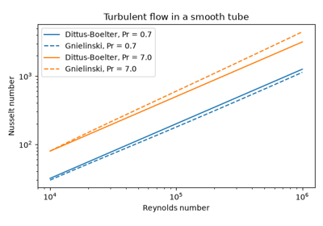
Dittus and Boelter: turbulent pipe convection (1930)
1934 – Nukiyama’s Boiling Curve and Zuber’s Critical Heat Flux#
Shiro Nukiyama boiled water on electrically heated wires and found that the heat flux reached a maximum a few tens of kelvin above saturation. At the next increment of power the wire was blanketed by vapour and jumped to red heat, or melted. The full curve, with its falling transition region and minimum, was traced later by controlling temperature instead of power. In 1958 Novak Zuber explained the maximum as a Taylor-Helmholtz instability of the vapour columns, \(q''_{max} = (\pi/24)h_{fg}\rho_v[\sigma g(\rho_l - \rho_v)/\rho_v^2]^{1/4}\). The critical heat flux limits every boiler and nuclear reactor core.
Implementation:
engineeringkit.heat_transfer.zuber_critical_heat_flux(). The example
sketches the boiling curve of water with standard correlations and finds
the temperature jump at constant power.
References: S. Nukiyama, “The maximum and minimum values of the heat Q transmitted from metal to boiling water under atmospheric pressure,” J. Soc. Mech. Eng. Japan 37 (1934) 367-374 (transl. Int. J. Heat Mass Transfer 9 (1966) 1419-1433); N. Zuber, “On the stability of boiling heat transfer,” Trans. ASME 80 (1958) 711-720.
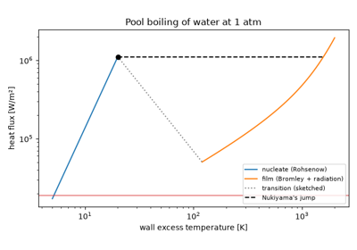
Nukiyama’s boiling curve and Zuber’s critical heat flux (1934)
1947 – Heisler’s Transient Conduction Charts#
The cooling of a slab, cylinder or sphere is a Fourier series whose eigenvalues solve a transcendental equation, \(\zeta\tan\zeta = Bi\) for the slab. M. P. Heisler, working on induction heating, kept only the first term, valid once the Fourier number exceeds about 0.2, and charted the centre temperature against \(Fo\) for each \(1/Bi\). The Heisler charts were the standard tool for transient conduction until computers made the series trivial.
Implementation:
engineeringkit.heat_transfer.plane_wall_transient() and
engineeringkit.heat_transfer.fourier_number(). The example redraws the
centre chart, measures the one-term error and times the quench of a steel
plate.
References: M. P. Heisler, “Temperature charts for induction and constant-temperature heating,” Trans. ASME 69 (1947) 227-236.
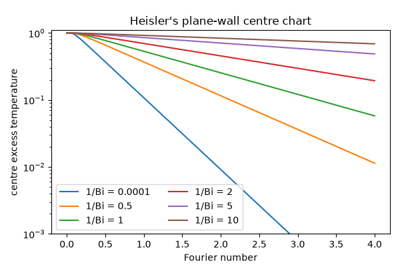
Heisler’s transient conduction charts (1947)
1947 – Crank and Nicolson: Numerical Conduction#
The explicit finite-difference scheme for the heat equation is stable only for a mesh Fourier number \(\alpha\Delta t/\Delta x^2 \le 1/2\), which forces tiny time steps; the fully implicit scheme is always stable but only first-order accurate. John Crank and Phyllis Nicolson averaged the two and obtained a scheme that is both unconditionally stable and second order in time. It remains the default for diffusion problems, from heat conduction to option pricing.
Implementation: engineeringkit.heat_transfer.conduction_1d(). The
example measures the order of accuracy of the implicit and Crank-Nicolson
schemes and watches the explicit one blow up above \(r = 1/2\).
References: J. Crank and P. Nicolson, “A practical method for numerical evaluation of solutions of partial differential equations of the heat-conduction type,” Proc. Cambridge Phil. Soc. 43 (1947) 50-67.
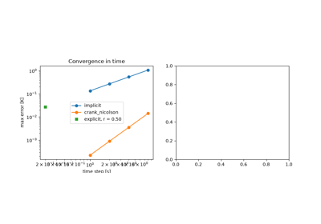
Crank and Nicolson: numerical conduction (1947)
1955 – Kays and London: Effectiveness-NTU#
The log-mean temperature difference sizes an exchanger when all four end temperatures are known, but rating a given exchanger with it needs iteration. William Kays and Alexander London, testing compact exchangers at Stanford, organised the results around the effectiveness \(\varepsilon = \dot Q/\dot Q_{max}\) as a function of \(NTU = UA/C_{min}\) and the capacity ratio, and published charts for every flow arrangement in Compact Heat Exchangers.
Implementation:
engineeringkit.heat_transfer.exchanger_effectiveness_counterflow(),
engineeringkit.heat_transfer.exchanger_effectiveness_parallel(),
engineeringkit.heat_transfer.log_mean_temperature_difference(),
engineeringkit.heat_transfer.heat_exchanger_rate() and
engineeringkit.heat_transfer.overall_u(). The example rates an oil
cooler by both methods and integrates the stream temperatures along it.
References: W. M. Kays and A. L. London, Compact Heat Exchangers (1955).
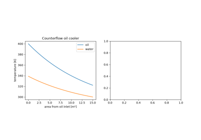
Kays and London: the effectiveness-NTU method (1955)
1975 – Churchill and Chu: Natural Convection over All Rayleigh Numbers#
Free convection on a vertical plate was long described piecewise: a laminar \(Ra^{1/4}\) law, a turbulent \(Ra^{1/3}\) law and a gap between them. Stuart Churchill and Humbert Chu fitted one smooth expression from creeping flow to turbulent plumes, using Churchill’s method of blending asymptotes. Their correlation is the standard for walls, radiators and electronics enclosures.
Implementation:
engineeringkit.heat_transfer.churchill_chu_nusselt() and
engineeringkit.heat_transfer.rayleigh_number(). The example checks
both asymptotes and the laminar boundary-layer solution.
References: S. W. Churchill and H. H. S. Chu, “Correlating equations for laminar and turbulent free convection from a vertical plate,” Int. J. Heat Mass Transfer 18 (1975) 1323-1329.
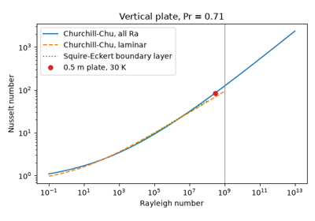
Churchill and Chu: natural convection over all Rayleigh numbers (1975)